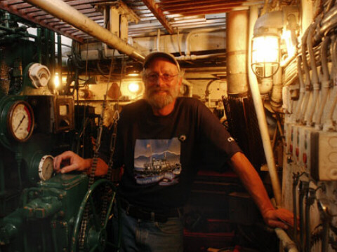

tugboat Palomar
{kind=link}
| Model #: | 6HM1558 | Engine #: | |
| Bore & Stroke: | 11 1/2" x 15" | Cylinders: | six |
| Horsepower: | 300 | RPM: | 300 |
| Current Owner: | Dave Haizlip |
| Current Location: | East Sound, Washington |
| Current Condition: | Operational |
Engine History
When the Star and Crescent Boat Company in San Diego built the Palomar in 1926, they installed a 240 hp Fairbanks-Morse diesel engine that propelled the tug around the waters of Southern California until 1946. The Pacific Tow & Salvage company of Long Beach bought the tug from the War Shipping Administration after World War II and repowered her with an Atlas-Imperial. The Foss Maritime Company acquired ownership of Pacific Tow & Salvage in 1950 and transferred the Palomar to its Bellingham Tug &Amp; Barge division. The Foss Company later transferred the tug to its own colors, renaming her Lorna Foss, the second vessel to hold that name. Decommissioned in 1969, her next owners renamed her the Searchmaster and used her for cruises, charter, and exploration.
Tacoma-based tugboat operator and diesel mechanic Keith Sternberg bought the tug in 1979 and restored the name Palomar. The tug has changed owners since, but remains a favorite in the Puget Sound retired tugboat and antique engine communities.
External Links
Carl Cook's page featuring Palomar at the 2002 Olympia Harbor Days